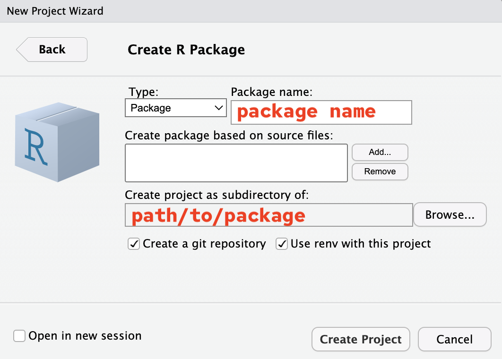
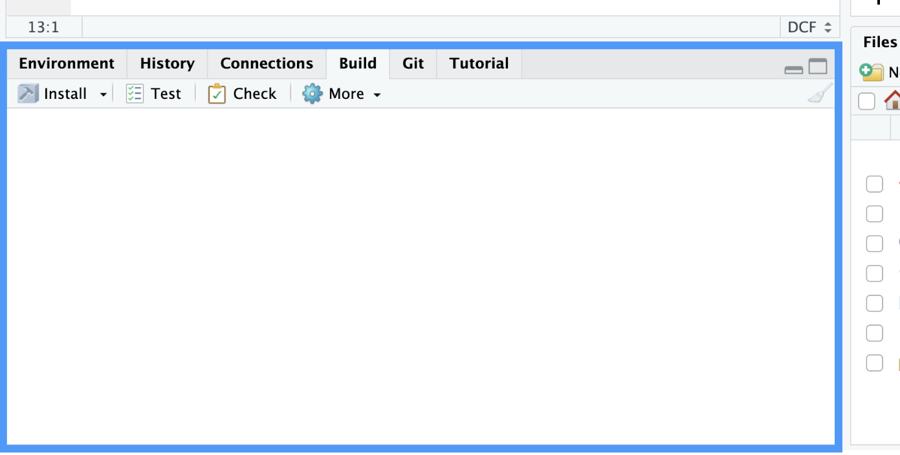
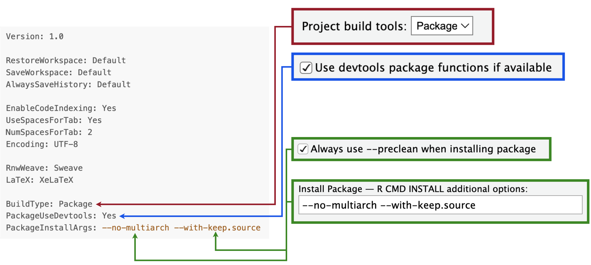
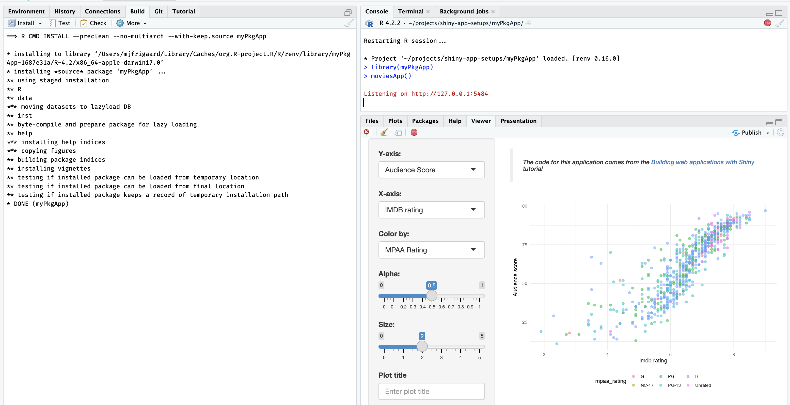

install.packages(remotes)
remotes::install_github(
"https://github.com/mjfrigaard/sapkgs", ref = "duap")In this post, I’ll be using devtools and usethis to develop duap, an R package that contains a Shiny application (i.e., devtools/usethis app-package). You can access the duap app-package from the sapkgs repo.
The R package development workflow is well documented in R Packages and Mastering Shiny. I wrote this post because I frequently encountered R developers who were comfortable with Shiny application development, but had never developed an R package.
We’ll walk through converting an existing Shiny application into an app-package in detail, because R package development differs from creating a standalone Shiny application. Hopefully by reading this you won’t have to rebuild your application entirely from scratch.
The app-package development process can be organized into three areas: Start, Build, and Use.
- Start covers the steps required to begin building a Shiny app withing a package framework (from the console and IDE).
- Build covers the development process, which includes writing and storing code, data, external resources (i.e., data), documentation, and testing.
- Use shows how developers can launch their application using the given framework/package locally (i.e., within the RStudio (Posit) IDE).
duap
Building a Shiny app as a package is highly recommended. Both the golem and leprechaun frameworks convert your Shiny application into an R package, and while this might seem like overkill, when you consider the additional development tools accessible to R packages, I think you’ll see why the advice makes sense.
Start
Create a new R package using devtools (which also installs usethis).
install.packages("devtools")
library(devtools)From Console
To create a new R package from the console, run usethis::create_package():
usethis::create_package(path = "duap")A new RStudio session will open (and the name of the project–i.e., the name of the .Rproj file–will be identical to the package name).
From Project Wizard
RStudio’s New Project Wizard can create a new Shiny app package using the following:

usethis::create_package project setup
A new package built from the console has the following folders and files:
duap/
├── DESCRIPTION
├── NAMESPACE
├── R/
└── duap.Rproj
1 directory, 3 filesPackages built from the New Project Wizard will have a few additional folders and files:
duap/
├── DESCRIPTION
├── NAMESPACE
├── R/
│ └── hello.R
├── man/
│ └── hello.Rd
├── myRPkg.Rproj
└── renv/
├── activate.R
├── sandbox/
│ └── R-4.2
└── settings.dcf
4 directories, 7 filesThese additional files are:
hello.Rin theR/folder
hello.Rdin theman/folder
- a
renv/folder for package management
R/hello.R and man/hello.Rd are boilerplate files and can be deleted, but both package setups have a DESCRIPTION, NAMESPACE, R/ folder, and .Rproj file. These four items can be thought of as the minimal package setup required to access RStudio’s Build tools.
Build
Well work through simple application from the excellent Building Web Applications with Shiny (BWAS) course. Well convert this application into an R package by 1) converting the any logic into utility functions, 2) modularizing the applications behaviors into functions (or Shiny modules), 3) creating a standalone app function for launching the app.
Modules
The application in duap is using modules to separate the app into the following digestible mental chunks. We’ll create two modules for our application in duap: one for collecting inputs, the other for displaying plot outputs.1
Input module
The input module collects the graph parameters from the UI and returns them as reactive inputs from the server.
show/hide mod_var_input
mod_var_input_ui <- function(id) {
ns <- NS(id)
tagList(
selectInput(
inputId = ns("y"),
label = "Y-axis:",
choices = c(
"IMDB rating" = "imdb_rating",
"IMDB number of votes" = "imdb_num_votes",
"Critics Score" = "critics_score",
"Audience Score" = "audience_score",
"Runtime" = "runtime"
),
selected = "audience_score"
),
selectInput(
inputId = ns("x"),
label = "X-axis:",
choices = c(
"IMDB rating" = "imdb_rating",
"IMDB number of votes" = "imdb_num_votes",
"Critics Score" = "critics_score",
"Audience Score" = "audience_score",
"Runtime" = "runtime"
),
selected = "imdb_rating"
),
selectInput(
inputId = ns("z"),
label = "Color by:",
choices = c(
"Title Type" = "title_type",
"Genre" = "genre",
"MPAA Rating" = "mpaa_rating",
"Critics Rating" = "critics_rating",
"Audience Rating" = "audience_rating"
),
selected = "mpaa_rating"
),
sliderInput(
inputId = ns("alpha"),
label = "Alpha:",
min = 0, max = 1, step = 0.1,
value = 0.5
),
sliderInput(
inputId = ns("size"),
label = "Size:",
min = 0, max = 5,
value = 2
),
textInput(
inputId = ns("plot_title"),
label = "Plot title",
placeholder = "Enter plot title"
)
)
}
mod_var_input_server <- function(id) {
moduleServer(id, function(input, output, session) {
return(
reactive({
list(
"y" = input$y,
"x" = input$x,
"z" = input$z,
"alpha" = input$alpha,
"size" = input$size,
"plot_title" = input$plot_title
)
})
)
})
}Utility function
We need a graphing function (point_plot()) capable of handling string inputs from Shiny (and a dynamic dataset loaded from the R package).
show/hide point_plot()
point_plot <- function(df, x_var, y_var, col_var, alpha_var, size_var) {
ggplot(data = df,
aes(x = .data[[x_var]],
y = .data[[y_var]],
color = .data[[col_var]])) +
geom_point(alpha = alpha_var, size = size_var)
}Display module
The display module (mod_display_plot) will include a plotOutput() in the UI and a var_inputs argument in the server (to collect the returned reactive values from mod_var_input).
show/hide mod_display_plot
mod_display_plot_ui <- function(id) {
ns <- NS(id)
tagList(
tags$br(),
tags$blockquote(
tags$em(
tags$h6("The code for this application comes from the ",
tags$a("Building web applications with Shiny",
href = "https://rstudio-education.github.io/shiny-course/"),
"tutorial"))),
plotOutput(outputId = ns("scatterplot"))
)
}
mod_display_plot_server <- function(id, var_inputs) {
moduleServer(id, function(input, output, session) {
load("data/movies.rda")
inputs <- reactive({
plot_title <- tools::toTitleCase(var_inputs()$plot_title)
list(
x = var_inputs()$x,
y = var_inputs()$y,
z = var_inputs()$z,
alpha = var_inputs()$alpha,
size = var_inputs()$size,
plot_title = plot_title
)
})
output$scatterplot <- renderPlot({
plot <- point_plot(
df = movies,
x_var = inputs()$x,
y_var = inputs()$y,
col_var = inputs()$z,
alpha_var = inputs()$alpha,
size_var = inputs()$size
)
plot +
ggplot2::labs(
title = inputs()$plot_title,
x = stringr::str_replace_all(tools::toTitleCase(inputs()$x), "_", " "),
y = stringr::str_replace_all(tools::toTitleCase(inputs()$y), "_", " ")
) +
ggplot2::theme_minimal() +
ggplot2::theme(legend.position = "bottom")
})
})
}Standalone app function
Finally, I need to add these into a standalone app function moviesApp() (stored in R/moviesApp.R).2 Note the ids in each module function pair must match to create the shared namespace.
show/hide moviesApp()
moviesApp <- function() {
# call to shinyApp()
shinyApp(
# UI ----
ui = fluidPage(
sidebarLayout(
sidebarPanel(
# UI input module ----
mod_var_input_ui("vars")
),
# UI display module ----
mainPanel(
mod_display_plot_ui("plot")
)
)
),
server = function(input, output, session) {
# server input module (capturing inputs) ----
selected_vars <- mod_var_input_server("vars")
# server display module (rendering outputs) ----
mod_display_plot_server("plot",
var_inputs = selected_vars)
}
)
}Package files
R packages have two important metadata files: DESCRIPTION and NAMESPACE. Neither of these files have extensions, and both contain vital information for your package to function properly.
We can manually edit the DESCRIPTION file, but the NAMESPACE file is automatically generated during the development process.
DESCRIPTION
The DESCRIPTION file plays an important role in R packages.3
The initial DESCRIPTION file in duap is below:
Package: duap
Title: What the Package Does (One Line, Title Case)
Version: 0.0.0.9000
Authors@R:
person("First", "Last", , "first.last@example.com", role = c("aut", "cre"),
comment = c(ORCID = "YOUR-ORCID-ID"))
Description: What the package does (one paragraph).
License: `use_mit_license()`, `use_gpl3_license()` or friends to pick a
license
Encoding: UTF-8
Roxygen: list(markdown = TRUE)
RoxygenNote: 7.3.1The package name is automatically added, but the remaining fields need to be completed (consult R packages for more information on filling out the DESCRIPTION file).
The DESCRIPTION file in the duap prompts the RStudio IDE to activate the Build tools pane (see below):

The Build pane is controlled by the Package Build options in the .Rproj file. We can change these settings with Tools > Project Options… > Build Tools, the select Package from the dropdown:

.Rproj fields when converting to and R package:
roxygen2
When we’re confident the app code works (and the app renders), we will make sure the functions are properly documented by describing each function with roxygen2 tags. roxygen creates a NAMESPACE file, generates .Rd files, and can be configured to automatically build vignettes.
The standard roxygen2 skeleton tags include @param, @return, @export, and @examples
@paramlists the existing arguments (or variables) for the function@returnshould be a description of the object/side-effect/thing the function produces (and any warnings or errors if used incorrectly)
Exports
The following roxygen2 tags can be used to update the NAMESPACE file (which you should never edit manually!).
@exportwill make the function available to other people when they use your package
Imports
Importing functions and objects from add-on packages is best summarized in the roxygen2 documentation:
“If you are using just a few functions from another package, we recommending adding the package to the
Imports:field of theDESCRIPTIONfile and calling the functions explicitly using::, e.g.,pkg::fun().”
Following this advice, we should add ggplot2, stringr, rlang, and the other packages we used above to the Imports: field with usethis::use_package().
import vs. @importFrom:
If an item you’re importing can’t be accessed with the
pkg::fun()syntax, you should use@importFrom. There’s even a handy helper fromusethis(use_import_from("package", "function").@importshould only be used when “you make such heavy use of so many functions from another package that you want to import its entire namespace. This should be relatively rare.”
roxygen2 imports and exports are covered in more depth in R packages..
The roxygen2 for point_plot() and moviesApp() is below:
roxygen2 for point_plot()
#' Plot points (shiny)
#'
#' @param df input dataset (tibble or data.frame)
#' @param x_var x variable
#' @param y_var y variable
#' @param col_var color variable
#' @param alpha_var alpha value
#' @param size_var size value
#'
#' @return `ggplot2` plot object
#'
#' @export
#'
#' @importFrom rlang .data
#'
#' @examples
#' require(duap)
#' movies <- duap::movies
#' point_plot(df = movies,
#' x_var = "critics_score",
#' y_var = "imdb_rating",
#' col_var = "critics_rating",
#' alpha_var = 1/3,
#' size_var = 2)roxygen2 for moviesApp()
#' moviesApp
#'
#' Standalone app function
#'
#' @return A shiny app object
#'
#' @import shiny
#'
#' @export
#'I’ve included these examples because they both use @importFrom and @import appropriately.
Function documentation is handled with the R/ folder and roxygen2 comments/tags, but duap needs a README file, and a place for long-form documentation. Fortunately, RMarkdown handles each of these well:
README files
I can create a README file using usethis::use_readme_md() or usethis::use_readme_rmd()
I prefer the
.Rmdfile because it comes with executable code chunks.usethis::use_readme_rmd()✔ Setting active project to /Users/mjfrigaard/projects/duap ✔ Writing README.Rmd ✔ Adding ^README\\.Rmd$ to .Rbuildignore • Modify README.Rmd • Update README.Rmd to include installation instructions. ✔ Writing .git/hooks/pre-commit- When I knit
README.Rmd, it automatically generates theREADME.mdfor the package.
- When I knit
Vignettes
For long-form documentation I can use vignettes.
Vignettes can be created with
usethis::use_vignette()usethis::use_vignette("duap")✔ Adding knitr to Suggests field in DESCRIPTION ✔ Setting VignetteBuilder field in DESCRIPTION to knitr ✔ Adding inst/doc to .gitignore ✔ Creating vignettes/ ✔ Adding *.html, *.R to vignettes/.gitignore ✔ Adding rmarkdown to Suggests field in DESCRIPTION ✔ Writing vignettes/duap.Rmd • Modify vignettes/duap.Rmd
Vignettes are also written in RMarkdown and rendered whenever the package is built/installed.
duap/
└── vignettes/
└── duap.Rmd
1 directory, 1 fileBy combining rmarkdown and knitr, R packages have a documentation framework that has the added benefit of being somewhat fool-proof: vignettes have to successfully render for the package to be installed.
The vignettes folder will long-form documentation about how the application works, use cases, and features (and roxygen2 will document each function).
Load, document, install
“The
load_all()function is arguably the most important part of the devtools workflow.” - R Packages, 2ed
You’ll use the devtools::load_all() function frequently while youre developing your app-package. load_all() simulates how your functions will work when someone else uses your package. This removes the need to define them in the global workspace. It also gives you access to the functions from any add-on packages youve imported into your NAMESPACE (i.e., you wont need to run library()).
The full benefits of using load_all() are covered in R packages.
load_all()
After documenting everything with roxygen2, I want to make sure none of the functions are in my Environment (remove with rm() if necessary) and load the functions with devtools::load_all().
devtools::load_all()ℹ Loading duapdocument()
devtools::document() processes the roxygen2 tags to generate the NAMESPACE and the .Rd files in the man/ folder. The .Rd files are used to access the help files (i.e., package::function() can be accessed with ??function).
Managing your package NAMESPACE file is not something you do directly: its handled with the roxygen2 tags we covered above.
Run devtools::document() when youve written a new function with roxygen2 tags or included a package in the DESCRIPTION file under Imports:
devtools::document()ℹ Updating duap documentation
First time using roxygen2. Upgrading automatically...
Setting `RoxygenNote` to "7.2.3"
ℹ Loading duap
Writing NAMESPACE
Writing mod_plot_ui.Rd
Writing mod_plot_server.Rd
Writing point_plot.Rd
Writing mod_var_input_ui.Rd
Writing mod_var_input_server.Rd
Writing moviesApp.RdNAMESPACE != DESCRIPTION
Its important to understand that devtools::document() will use the roxygen2 tags to create the man/*.Rd files and update the NAMESPACE, but devtools::document() does not update the Imports: section in the DESCRIPTION.
To add packages dependencies to the DESCRIPTION, we need to use the usethis::use_package() function.4
The table below shows the connection between roxygen2 tags, the resulting NAMESPACE entry, and what should be listed in the DESCRIPTION.
install()
After loading and documenting the duap package, I want to make sure I can install the package into my library with devtools::install().
devtools::install()── R CMD build ────────────────────────────────────────────────────────────────
✔ checking for file /Users/mjfrigaard/projects/duap/DESCRIPTION ...
─ preparing duap: (1.8s)
✔ checking DESCRIPTION meta-information
─ checking for LF line-endings in source and make files and shell scripts (520ms)
─ checking for empty or unneeded directories
Omitted LazyData from DESCRIPTION
─ building duap_0.1.0.tar.gz
Running /Library/Frameworks/R.framework/Resources/bin/R CMD INSTALL
--install-tests
* installing to library ...
* installing *source* package duap ...
** using staged installation ...
** R
** byte-compile and prepare package for lazy loading
** help
*** installing help indices
** building package indices
** testing if installed package can be loaded from temporary location
** testing if installed package can be loaded from final location
** testing if installed package keeps a record of temporary installation path
* DONE (duap)Restart your R session and ensure you have a clean workspace:
Restarting R session...Then load your package with library():
library(duap)You can also use Install icon in the Build pane, which installs the package, restarts the R session, and loads the package all with one click!

The sequence I’ve demonstrated above (create .R file, write function, document with roxygen2, load, document, install) is the minimal version of the full development workflow.
Storing the applications code in the R/ folder and (using RStudio’s build tools) keeps files organized, well documented, and self-contained:
All the code is stored in the
R/folderWe’ve separated the code into smaller pieces (modules) that can be tested independently (more on this later)
Dependencies are being managed by
roxygen2anddevtools::document(), which will update theNAMESPACEwith any functions tagged with@importFrom(or@import)
Now that I have the function documentation in the .Rd files, the DESCRIPTION and NAMESPACE, I can move onto adding and using data.
Data
Most app-packages will require files beyond the .R files in the R/ folder. Apps will often use data files when they’re deployed, which well cover next. R Packages have a consistent and standardized way of storing data, and have designated locations for internal and external data.
data/
usethis::use_data() or usethis::use_data_raw() make it simple to add data to the application package.
In R packages, data is stored in either data/ or data-raw/. To access a copy of the movies dataset in duap (i.e., with duap::movies), I can load movies.RData into the environment and run usethis::use_data(movies). This will create a data/ folder and save movies as movies.rda:
✔ Adding R to Depends field in DESCRIPTION
✔ Creating data/
✔ Saving movies to data/movies.rda
• Document your data (see https://r-pkgs.org/data.html)data-raw/
I can also import movies.RData by adding the following to data-raw/movies.R:
usethis::use_data_raw("movies")✔ Creating data-raw/
✔ Writing data-raw/movies.R
• Modify data-raw/movies.R
• Finish the data preparation script in data-raw/movies.R
• Use `usethis::use_data()` to add prepared data to packageIn the data-raw/movies.R script, I want to import the movies.RData file, but where should I import it from?
inst/extdata
The inst/ folder plays a special role when developing R packages:
“When a package is installed, everything in
inst/is copied into the top-level directory of the installed package” - R Packages, 2ed
Consider the example folder and files below: file.txt, CITATION, and extdata/my_data.csv:
Source (development) form
inst/
├── file.txt
├── CITATION
└── extdata/
└── my_data.csvBinary (installed) form
file.txt
CITATION
extdata/
└── my_data.csvThe neat thing about the inst/ folder is that after we’ve loaded and installed our package, we can access the files in inst/extdata/ with the system.file() function:
If I want to test functions in duap using movies.RData (or another dataset), those should be placed in inst/extdata/
system.file()
A great way to understand what files are available in inst/ when your package is to pass system.file() to fs::dir_tree():
fs::dir_tree( # wrap this in a folder tree
system.file(package = "duap"))expand to see inst/ folder contents
/path/to/installed/package/duap
├── DESCRIPTION
├── INDEX
├── LICENSE
├── Meta
│ ├── Rd.rds
│ ├── data.rds
│ ├── features.rds
│ ├── hsearch.rds
│ ├── links.rds
│ ├── nsInfo.rds
│ └── package.rds
├── NAMESPACE
├── R
│ ├── duap
│ ├── duap.rdb
│ └── duap.rdx
├── data
│ ├── Rdata.rdb
│ ├── Rdata.rds
│ └── Rdata.rdx
├── extdata
│ └── movies.RData
├── help
│ ├── AnIndex
│ ├── aliases.rds
│ ├── duap.rdb
│ ├── duap.rdx
│ ├── figures
│ └── paths.rds
└── html
├── 00Index.html
└── R.cssThe system.file() function will show me the path to the locally installed version of the package (hence the /path/to/installed/package/ at the beginning of the path).
The inst/exdata/ folder comes in handy for adding example data, but its also useful for application development (more on that later).
Tests
Testing is an important part of any package, and apps tend to require additional tests (especially when they’re moving from development into production environments).
use_testthat()
To apply the testing framework provided by the testthat package. package, we’ll use usethis::use_testthat():
usethis::use_testthat()✔ Adding testthat to Suggests field in DESCRIPTION
✔ Setting Config/testthat/edition field in DESCRIPTION to 3
✔ Creating tests/testthat/
✔ Writing tests/testthat.R
• Call `use_test()` to initialize a basic test file and open it for editing.This creates a new tests/ folder, with a testthat/ sub-folder and script.
duap/
└── tests/
├── testthat/
└── testthat.R
2 directories, 1 fileWriting tests
testthat is designed for unit tests (i.e., testing each functional unit in the code), but for Shiny apps, we need to think beyond standard unit testing.
We need to confirm the functions work and return predictable results, but we also need to make sure they play well with each other (integration tests), and that the application can be deployed (system tests).
Testing is well described in the Shiny documentation and in Mastering Shiny. Generally speaking, unit tests are performed with testthat, and module testing can be done with Shiny’s testServer() function. To test the full application (or a specific behavior) use the shinytest2 package.
Use
Using an app built as a package is similar to using any R function we’ve loaded from a package. After successfully loading, documenting, and installing the package, we can run the app by loading the duap (with library(duap)) and moviesApp():

duap::moviesApp()
Recap
We’ve skipped over some important development steps covered in R packages (license, using Git/GitHub, code coverage, NEWS, etc.), and you should bookmark this text as you start developing Shiny app-packages. Hopefully this post has demonstrated that by building Shiny apps as R packages, a suite of developer tools are available in the IDE (and the application files and folders have a uniform structure).
duap is a substantial improvement over a single file Shiny application–the app-package holds the code, data, documentation, and includes explicit information on the dependencies and requirements (in the DESCRIPTION and NAMESPACE).
Footnotes
Modules consist of two functions (one for the UI, and another in the server) but it’s common practice to combine them in a single file in
R/.↩︎Standalone app functions contains a call to
shiny::shinyApp()and includes the module functions (in their relative positions).↩︎Creating the
DESCRIPTIONfile is the first step when converting an existing app (and when creating a newgolemapps).↩︎Read more on this topic in Confusion about
Imports.↩︎